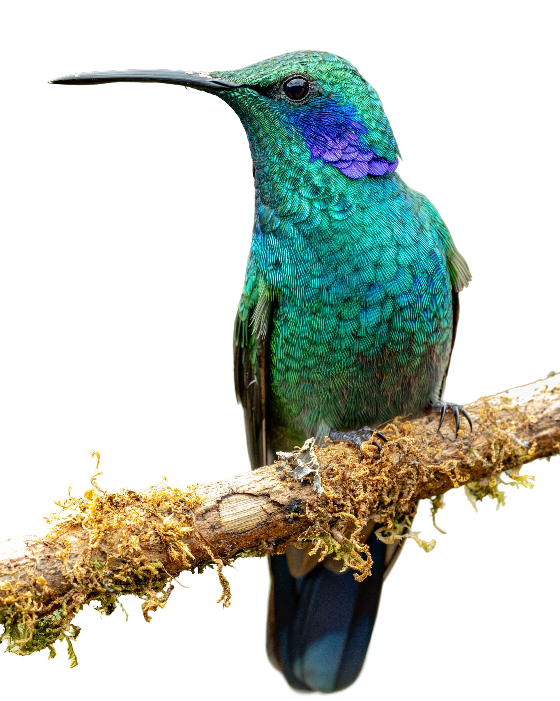

01
La invitación
Te queremos en la mesa donde esto se construye
Después del GET Forum, del 8 al 10 de octubre, reuniremos en Tanusas, en la costa de Ecuador, a un grupo pequeño de personas del Consejo CEIBA cuya experiencia, visión y capacidad de acción consideramos fundamentales para dar un siguiente paso hacia la BioProsperidad en la región.
Queremos alejarnos durante tres días del ritmo y los formatos habituales, y crear las condiciones para pensar profundamente, cuestionarnos, construir confianza y trabajar de forma colaborativa. No buscamos llegar con todas las respuestas. Buscamos perspectivas que tensionen los supuestos, enriquezcan la arquitectura y nos ayuden a convertirla en algo que pueda ponerse a prueba en los territorios.
Partimos de una pregunta
¿Cómo podemos innovar en la construcción de prosperidad reconociendo a la economía como parte de un sistema vivo, y haciendo posible que la naturaleza, las culturas y las comunidades que la sostienen prosperen conjuntamente?
CEIBA Tanusas 2026 · Invitación02
02
El concepto
¿Qué es un Sistema de BioProsperidad?
El problema no es solo que falte financiamiento para la biodiversidad: es que los sistemas que sostienen la integridad ecológica y la prosperidad socioeconómica se financian, gobiernan y gestionan como si fueran separados. El capital llega fragmentado y refuerza silos en lugar de coherencia.
BioProsperidad nombra una convicción simple: la integridad ecológica, el bienestar comunitario, la continuidad cultural y el valor económico regenerativo no son objetivos que compiten. Son resultados interdependientes de sistemas territoriales sanos. Si la resiliencia es sistémica, las vías para financiarla y gobernarla también deben serlo.
Un Sistema de BioProsperidad es una infraestructura de transición: un portafolio integrado de procesos interrelacionados, coordinados y financiados juntos bajo una ruta de transformación de 10 a 20 años, para fortalecer la capacidad de un territorio biodiverso y biocultural de generar, retener y recircular valor ecológico, social, cultural y económico entre generaciones.
Escala del demostrador
500.000
hectáreas en hotspots de biodiversidad y cultura, agregadas entre los socios custodios del sistema.
Horizonte
10–20
años de ruta de transformación coordinada y financiada como un solo portafolio.
Métrica insignia
Retención de valor territorial
La proporción del valor generado que permanece, se reinvierte o recircula dentro del territorio.
Nos hemos vuelto muy eficaces financiando producción y transacciones, y muy poco eficaces financiando las condiciones que hacen posible la prosperidad.
CEIBA Tanusas 2026 · Invitación03
03
Las cinco dimensiones
Un portafolio, no cinco sectores
Las cinco dimensiones funcionan de forma coordinada. Ninguna se sostiene en aislamiento, y por eso ninguna se financia por separado.
01
Procesos que aumentan la integridad ecológica
Función hídrica, biodiversidad, conectividad de ecosistemas, regeneración de suelos y salud ecosistémica, mantenidas y ampliadas como infraestructura de resiliencia.
02
Industrias nature-positive y sistemas asociativos de valor
Actividad económica diversificada y regenerativa: agroforestería, pesca, servicios de restauración, turismo de naturaleza, procesamiento con valor agregado y bioeconomía emergente.
03
Continuidad cultural y patrimonio biocultural
Lenguas, conocimientos y tecnologías tradicionales, aprendizaje intergeneracional, gobernanza biocultural e identidades ligadas al lugar.
04
Bienestar comunitario y Buen Vivir
Planes de vida propios: soberanía alimentaria, agua limpia, salud y energía, con compromisos explícitos con la nutrición infantil y la equidad de género en la gobernanza local.
05
Flujos de capital y conectividad territorial
Circulación y coordinación de capital financiero, intelectual, social, tecnológico, político y cultural entre territorios rurales y urbanos.
↺
Y, atravesando todas: gobernanza y coordinación territorial
El mecanismo articulador que alinea conservación, desarrollo económico, cultura y bienestar en una visión territorial compartida.
CEIBA Tanusas 2026 · Invitación04
04
La arquitectura
La Arquitectura de Capital de Custodia
La innovación no es un fondo nuevo: es una forma nueva de coordinar capital alrededor de la resiliencia de sistemas vivos. Cada Sistema de BioProsperidad funciona como un portafolio integrado cuyo desempeño depende de la salud del territorio completo, no de maximizar retornos proyecto por proyecto. Está en etapas tempranas de diseño, y por eso vamos a Tanusas.
Tres principios
Secuenciación
Lo filantrópico y concesional abre gobernanza, confianza y evidencia; a medida que baja el riesgo entra capital de impacto, comercial e institucional.
Stacking
Donaciones, capital catalítico, finanzas concesionales, inversión de impacto y capital comercial coexisten en un mismo sistema según su tolerancia al riesgo y su retorno esperado.
Diversificación
La soberanía económica se fortalece con fuentes de valor complementarias, no con dependencia de una sola cadena o commodity.
Funciones del capital
Filantrópico y catalítico
Gobernanza, mapeo de sistemas, medición de resiliencia, confianza y primeras mitigaciones de riesgo.
Inversión ligada a desempeño
Financiamiento de largo plazo para actividad productiva e infraestructura, con retornos atados a flujos del sistema.
Capital basado en resultados
Reconoce desempeño ecológico verificado: biodiversidad, carbono, agua, suelos.
El portafolio, en tres tiempos
Empresas de transición
Sectores productivos e industrias regenerativas con ingresos y estabilidad de corto plazo.
Industrias nature-positive emergentes
Nuevas empresas y sistemas de valor con crecimiento, diversificación e innovación a mediano plazo.
Pipelines de futuro
Investigación, ciencia y experimentación que crean la capacidad adaptativa de mañana.
CEIBA Tanusas 2026 · Invitación05

05
La tesis de inversión
La tesis
El desempeño financiero de largo plazo depende de la resiliencia de los sistemas ecológicos, de gobernanza y productivos que sostienen la actividad económica. La regeneración no es un costo del desempeño: es su condición.
Mecanismo habilitante
Un segundo mecanismo la acompaña: el Sistema de Valor BioPróspero, multicapital y biocultural, que hace visibles las formas de valor que sostienen la resiliencia sin reducir la naturaleza ni la cultura a términos monetarios.
Lo que se mide
Retención de valor territorial: la proporción del valor generado que permanece, se reinvierte o recircula dentro del territorio, entre generaciones.
CEIBA Tanusas 2026 · Invitación06
06
Qué buscamos
Salir de Tanusas con tres cosas construidas
Trabajaremos sobre cómo financiar la resiliencia de un territorio como un sistema completo: qué debe sostener el capital, qué tipos de capital necesitan encontrarse, en qué secuencia, cómo construir portafolios que financien conjuntamente integridad ecológica, economías territoriales, cultura, bienestar y gobernanza, y qué principios deberían ser no negociables.
01
Una primera Arquitectura de Capital para la BioProsperidad
Funciones, secuencia, combinación de capitales y salvaguardas.
02
Las decisiones para publicar el Marco de Sistemas de BioProsperidad
Estructura, autoría, alcance y ruta de publicación del marco y su arquitectura de capital.
03
Una ruta de 12 meses para ponerla a prueba
Territorios candidatos en América Latina y el Caribe, con primeros actores, responsabilidades e hitos.
Cómo trabajaremos · cinco planos al mismo tiempo
Relacional
Confianza y vínculos capaces de sostener desacuerdos y colaboración larga.
Conceptual
Un lenguaje compartido sobre valor, bienestar, gobernanza y regeneración.
Estratégico
Claridad sobre arquitectura, pilotos, riesgos y preguntas por probar.
Práctico
Responsables, contribuciones y próximos pasos concretos.
Personal
Una conexión renovada con la naturaleza, el cuerpo y el sentido del trabajo.
Formato: cuatro mesas de trabajo profundo, caminatas, mar y comida del bosque.
CEIBA Tanusas 2026 · Invitación07
07
El lugar
Tanusas: bosque comestible, mar y territorio
Tanusas está en Puerto Cayo, en la costa de Manabí: un lugar donde el bosque seco tropical llega hasta el mar. Es el escenario que elegimos porque el territorio también trabaja: caminar, comer y conversar allí cambia la conversación.
Su restaurante Boca Valdivia, del chef Rodrigo Pacheco, cocina desde un bosque comestible sembrado en el mismo territorio: cientos de especies nativas, agroforestería y pesca artesanal en diálogo con las comunidades vecinas. Es, en la práctica, una demostración viva de bioprosperidad y una de nuestras aulas durante estos días.
El programa se mueve entre la mesa de trabajo, el bosque y la playa: mañanas de guayusa, baño en el mar para quien quiera, caminatas de observación con Rodrigo, y encuentros frente al atardecer para pensar en voz alta.
Cómo llegar
Tanusas · Puerto Cayo
Mesa de trabajo
Las actividades incluyen caminar el bosque comestible, encuentros frente al mar y trabajo dedicado a construir la arquitectura de capital: un grupo curado, de varios países y perspectivas, con la intención de poner manos a la obra.
CEIBA Tanusas 2026 · Invitación08
08
Agenda general
Tres días, un ritmo distinto
Jueves 8
Llegada, traslado y apertura
Mañana
Llegada a Quito. Cada persona gestiona su vuelo hasta Quito.
12:00
Punto de encuentro en el aeropuerto de Quito. Viajamos juntas y juntos desde aquí.
15:45
Vuelo Quito → Manta. Llegada y traslado terrestre a Tanusas, check-in y tiempo para aterrizar.
Noche
Fogata de las intenciones: cena compartida, apertura de CEIBA y una ronda. ¿Con qué llego?, ¿qué quiero comprender?, ¿qué puedo aportar?
Viernes 9
Día completo de mesas de trabajo
Amanecer
Opcional: silencio, guayusa y tabaco con nuestros aliados indígenas, baño en el mar.
Desayuno
Desayuno del bosque comestible con Rodrigo Pacheco: el origen de los alimentos y su relación con territorio, nutrición y regeneración.
Mañana
Mesas I y II · Capital stacking. ¿Qué debe sostener el capital? ¿Qué capitales y capacidades necesitan encontrarse, y qué función cumple cada uno?
Tarde
Almuerzo del bosque comestible y descanso. Mesa III · Portafolio: cómo financiar la resiliencia como sistema y no como un conjunto de activos rentables.
Atardecer
Caminata en pares frente al mar. ¿Qué idea solté?, ¿qué veo ahora que antes no veía? Y cena de celebración.
Sábado 10
Bosque, síntesis y cierre
Temprano
Entrada al bosque comestible con Rodrigo Pacheco: caminar, observar y conversaciones caminadas. Círculo en el bosque: una lección del territorio por persona.
Mañana
Mesa IV · Tejer el camino. Síntesis, decisiones, estructura de publicación, ruta de demostración y compromisos.
13:00
Almuerzo de cierre y círculo final: una gratitud, un compromiso y una conexión que continúa. Salida coordinada a las 15:00 hacia Manta.
Agenda general y sujeta a ajustes. Horarios de vuelo y traslados se confirmarán con cada persona antes de la compra de boletos.
CEIBA Tanusas 2026 · Invitación09
09
Lo práctico
Qué implica aceptar esta invitación
Participación
Invitación personal y no transferible, con participación activa durante los tres días completos.
Grupo
Entre 12 y 15 personas del Consejo CEIBA y aliados, de múltiples países y perspectivas.
Traslados y estadía
Coordinamos el vuelo Quito–Manta, los traslados terrestres, el alojamiento y la alimentación en Tanusas.
Qué traer
Ropa ligera y de caminata, traje de baño, protección solar, y una pregunta que te importe de verdad.
Datos del retiro
Consejo CEIBA
CEIBA Tanusas 2026 · Invitación10
10
Confirmación
Reserva tu lugar en la mesa
Confirma antes del {{ fechaLimite }} para que podamos reservar tu lugar, coordinar tus vuelos y compartirte la agenda detallada con los materiales de lectura previa. Puedes responder en línea o devolver esta hoja completada a hola@naturatech.org.
Confirma en línea
naturatech.org/ceiba-tanusas
Tu respuesta
Confirmo mi lugar
Esta vez no puedo
Nombre y apellido
Organización y rol
Restricciones alimentarias o de salud
Correo
Ciudad de origen del vuelo
Teléfono de contacto
Una pregunta que te importe de verdad
Invitación personal y no transferible*
CEIBA Tanusas 2026 · Invitación11
Nuevas economías se están tejiendo desde las selvas, las costas y las comunidades. Nos daría muchísima alegría construir este siguiente paso contigo.
NaturaTech LAC es una iniciativa impulsada por BID Lab y co-liderada por C Minds, con el apoyo de Suecia, el Gobierno de Francia, Climate Collective y la red del Consejo CEIBA.
Consejo CEIBA · NaturaTech LAC
naturatech.org